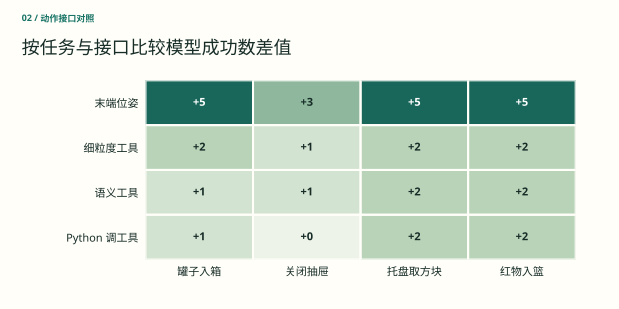
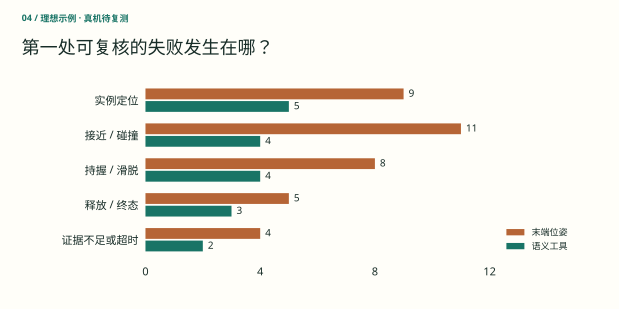
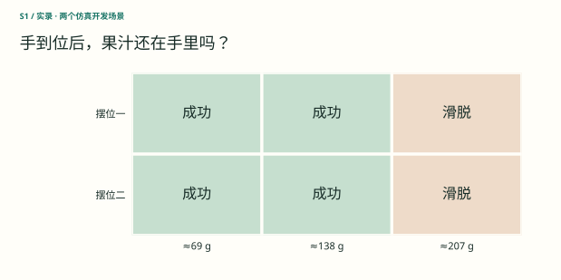

目录
主要发现
- 接口粒度改变决策开销。在 GPT‑6 Astra 的四任务对照中，语义工具和 Python 调工具均为 62/80；每场模型决策次数的中位数分别为 7 和 3。一次程序调用可以执行多个动作，物理执行成本必须单独统计。
- 蒸馏提高了工具调用能力。在 15 项 Piper 仿真任务中，Qwen3.5‑4B 的原生成功数从 33/450 增至 150/450；同执行条件下，GPT‑6 Astra 教师为 311/450。
- 改进执行器能让固定策略完成更多任务。在相同 450 个初态上，仅替换执行器，独立复核通过数从 130 增至 185；再使用进化执行器采集的数据微调学生，完整 TERM 达到 239。方法与分阶段对照。
引言
语言模型可以直接给机械臂一个末端位姿，也可以请求执行器“抓住蓝块”。两条指令都可能让夹爪闭合，差别在于谁选落点、谁检查抓稳，以及一次失败要到哪一轮才会被发现。我们在 Piper 上研究这三个问题，并在同一工具接口下训练本地学生模型，随后用 TERM 检验执行器进化对策略表现的影响。
研究覆盖四种动作接口、15 项仿真任务和真机复位对照。首先比较末端位姿与不同粒度的工具调用，再通过 TERM 分离学生策略和执行器的贡献。13 段 Piper 工作台录像提供动作过程的视觉证据；§3.2 的两段天行者 2 号仿真回放用于讨论跨本体操作和双机交接。
分析分别考察模型、接口和执行器。固定接口比较 GPT‑6 Astra 与 6.2 Astra，可观察模型对动作选择的影响。固定模型与摆位比较动作粒度，可测量每项任务的成功数和决策开销。固定学生而更换执行器，则检验相同工具词表下，执行实现对成功率的贡献。
1. 研究设计
1.1 任务与评测场景
1.1.1 仿真主评测：15 项任务
TERM 在 Piper 仿真中为每项任务设置 30 个新场景，每种策略均评测 450 场。下表按操作要求列出全部任务，并区分其训练来源。七项来源任务提供初始蒸馏轨迹，也用于执行器搜索和后续自训练采集；对这七项评测的是新摆位。另八项未进入上述训练或搜索，检验策略能否把已学操作用于不同物体、空间关系和任务组合。
| 操作要求 | 蒸馏来源任务（7） | 来源集外任务（8） |
|---|---|---|
| 抓取与放置 | 罐子入箱、托盘取方块 | 抓起胡萝卜、柠檬入箱 |
| 接触推动 | 推篮、关闭抽屉 | 推锅 |
| 空间关系与摆放 | 苹果与果汁排序 | 番茄放到土豆旁、方块反向堆叠、苹果与果汁反向排序 |
| 搜索、分拣与组合 | 杯子游戏、红色物体入篮 | 箱子与托盘分拣、摆桌 |
原生成功率（N-SR）使用任务环境给出的终态标志。复核成功率（V-SR）还要求目标空间关系、工作区边界、事件次序和动作后保持均满足任务要求。保持窗口在 20 Hz 下取 31 个状态样本，首尾间隔 1.50 秒。例如，摆放任务要求物体释放后仍受目标容器支撑。执行失败和证据不足的场次均保留在分母中。
1.1.2 分布偏移与真机协议
仿真另设四个互不重叠的测试集：未见摆位、未见物体、未见目标组合和长序列，每组 120 场，按原生判据分别报告。TERM 的真机配对评测包括罐子入箱、杯子游戏、苹果与果汁排序、方块反向堆叠。每任务复位 10 个摆位，五种策略各执行 40 场，共 200 次尝试。四项分别检验释放后容纳、遮挡下的目标搜索、多物体相对次序和叠放稳定性。
本文的 GPT 动作接口对照另选四项工作台任务：罐子入箱、关闭抽屉、托盘取方块和红色物体入篮。§2.3 的托盘取块后关抽屉是该对照的留出组合。下方录像展示罐子入箱的计分条件：罐体越过箱沿，夹爪松开并撤出，罐子留在箱内。其他工作台录像按各节所分析的动作嵌入。
黑盒在左、罐子在右。抬起后先看罐子是否一直跟着夹爪，再看松爪后罐子停在哪里。
1.2 模型、动作接口与评测条件
- 末端位姿
- 给出基座系末端位置、姿态和夹爪命令。逆运动学在本地求解，每段结束后读新图像和实测位姿。
- 细粒度工具
- 把定位、算接近点、对齐、下降、闭合、抬升分开发送。每个原语都可返回，下一步由模型决定。
- 语义工具
- 沿用 Guava 的九个模型可见工具。抓取按物体名调用，局部执行器选抓姿、接近、下降并闭合。抬升由下一条运动指令发起。
- Python 调工具
- 开放相同的语义工具，让模型一次写出条件与重试。程序依据实时返回决定分支；程序结束或出错，记录再送回模型。
成功按任务终态判定，并额外记录误抓、碰撞、保护停止和超时。各接口共享速度、工作空间、控制步数上限与墙钟时限；Python 循环和语义工具内部的动作都占预算。指令与相机证据相同，提示只更换必要的动作格式。两代模型使用各自锁定的配置，复测时记录确切服务版本。
1.2.1 配对摆位与执行预算
动作接口对照设四项任务，每项 20 个摆位，即 80 个物理初态。两种模型各使用四种接口，总计 640 个计划试次；每个模型与接口组合的分母为 80。同一摆位上的八种条件共享场景，统计上应保留其配对关系。真机复位以俯视参考图、容器朝向和夹爪起始位置为准，执行顺序按摆位轮换，以控制复位误差和次序效应。
1.2.2 坐标系与拒绝执行的请求
末端位姿接口需要规定坐标系、姿态约定和法兰至指尖的变换。工具接口在执行器内进行这部分换算。两者均记录模型请求、控制器接受的目标以及实测位姿。逆运动学拒绝计入预算。若最终画面里夹爪未移动，这三项记录可以区分未下发命令、目标不可达和运动未到位。
2. 结果
2.1 末端控制与工具调用
2.1.1 总体表现与比较口径
展开完整计数表
| 接口 | 罐子入箱 | 关闭抽屉 | 托盘取方块 | 红物入篮 | 合计 |
|---|---|---|---|---|---|
| 末端位姿 | 13 / 18 | 14 / 17 | 11 / 16 | 5 / 10 | 43 / 61 |
| 细粒度工具 | 11 / 13 | 12 / 13 | 10 / 12 | 6 / 8 | 39 / 46 |
| 语义工具 | 17 / 18 | 17 / 18 | 16 / 18 | 12 / 14 | 62 / 68 |
| Python 调工具 | 16 / 17 | 18 / 18 | 15 / 17 | 13 / 15 | 62 / 67 |
图 1 中，GPT‑6 直接给末端位姿一栏为 43/80，语义工具为 62/80，相差 19 次。换 6.2 后两项分别是 61/80、68/80，只相差 7 次。两种接口的差距从 23.75 个百分点降至 8.75 个百分点。两组变化应在相同的摆位和执行预算下比较。
该差异具有任务依赖性。图中的 6.2 对照里，罐子入箱两种接口都是 18/20，红物入篮则是 10/20 对 14/20。区分实例误选与邻物碰撞，需要对同一摆位的目标绑定和接近轨迹进行配对检查。
2.1.2 逐任务差异与托盘净空
图 2 以每项 20 个摆位为分母，报告 6.2 Astra 相对 GPT‑6 Astra 的成功数差值。末端位姿接口在罐子、抽屉、托盘和红物任务上分别增加 5、3、5、5 次成功；语义接口对应增加 1、1、2、2 次。每次成功对应 5 个百分点。语义接口在部分任务上的初值接近上限，增幅还受到可提升空间约束。


托盘取块需要同时满足抓取姿态可达和指尖避开盘沿两个条件。图中末端接口由 11/20 增至 16/20，语义接口由 16/20 增至 18/20。两段录像分别展示简单与拥挤的桌面。判断改进来自目标定位还是碰边后的修正，需要把第一次接近、接触和下一次观测对齐；仅从终帧无法判别。
盘里只有一个蓝块。把画面停在抬升和落放两处，能分别看到方块离开盘沿和在盘外着桌。
仍是从盘里取蓝块，但盘外多了积木和小物件。与简单桌面的录像对照，看夹爪选择了哪一块空桌面来放置。
2.1.3 同一摆位上的胜负分布
总成功数掩盖了接口之间方向相反的变化。图 3 中，两种接口都成功的摆位有 58 个，都失败的有 9 个。其余 13 个摆位中，仅语义工具成功的有 10 个，仅末端位姿成功的有 3 个。因此净差为 7，而发生变化的摆位有 13 个。对这两个方向分别复核，才能识别工具提供的帮助及其引入的约束。

共同失败也可能由不同事件引起。目标在两种条件下均被遮挡，提示观测不足；一组超时而另一组在正确定位后碰到邻物，则涉及预算与接近路径两个独立因素。诊断按首次可见偏差定位，同时保留终止原因和原任务终态。
2.1.4 小结
总成功数可能掩盖方向相反的场次。托盘两段录像展示了净空如何随摆位改变。哪一代模型更善于修正接近路径，仍需要同摆位、同接口的配对计分。
2.2 工具粒度与执行开销
2.2.1 同一次抓取，在哪一步交还控制？
从同一帧开始：夹爪张开，已通过 align 对到托盘内方块的上方。接下来要抓住方块。我们的语义接口沿用 Guava 的工具粒度。它给模型九个工具：grasp、align、move、rotate、close_gripper、release、home_pose、get_position 和 get_position_and_size。下面只展开其中的 grasp，两边都看到同一目标。 [1]
grasp(target_name="cube")模型给出物体名称。Guava 的自顶向下 PCA 路径刷新 RGB-D 观测、分割方块，用点云选抓姿，然后走到接近点、下降并闭合。模型在闭合后收到文本反馈，例如 closed。
mask = segment("cube")
pose = fit_grasp_pose(mask)
move_to_approach(pose)
descend_to_grasp(pose)
close_gripper()这里用伪代码命名我们的拆分步骤。每行是一次可返回的调用：模型看到分割结果后可以换目标，移动后可以修正接近方向，最后一次闭合仍使用相同的夹爪判据。
如果返回 closed，而新图像里方块仍在盘底，下一轮可以先张开夹爪，再从新图像定位。即便返回 grasped，也只能先把它当作夹爪反馈：Guava 的这版实现把受阻的 blocked 也对模型报告为 grasped。两种接口都要另发抬升动作，再看方块是否随手离开盘底。比较粒度时，一次抓取里面实际闭合了几次，就记几次。 [1]
固定 GPT‑6 Astra，细粒度工具与语义工具分别完成 39/80 和 62/80。两个机制可能解释这一差异。其一，模型少做了几次本可以由控制器稳定完成的坐标传递；其二，一个“抓取”内部可能已经包含了更好的定位或重试。只比较工具名字的数量，区分不了它们。
| 选择方式 | 成功 | 每场模型决策中位数 |
|---|---|---|
| 细粒度工具 | 39/80 | 15 |
| 语义工具 | 62/80 | 7 |
| Python 调工具 | 62/80 | 3 |
表中的 Python 和逐次语义调用总分恰好相同。程序可以提前写“持握成立才抬升”，抓空后能立即走本地分支；如果持握反馈有误，这段程序也会更快执行错误分支。因此分析需要对齐每次模型决策、底层执行次数和持握证据。一次生成的循环可能实际抓了三遍。
控制这一混杂因素的方法是把同一条粗工具的调用记录展开成细原语，逐项核对定位器、夹持阈值、接近路径和允许重试次数。再比较由 GPT 重新组织这些原语的版本。如果收益只在启用工具内重定位后出现，就应把收益记给执行器。
2.2.2 失败归因与目标绑定
红色物体入篮包含三次独立决策：模型指定目标，定位器把描述绑定到当前实例，执行器选择接近方向。目标描述正确时，掩码仍可能包含相邻物体；实例正确时，下降仍可能碰撞。图 4 将每场失败归于第一个能由观测确认的偏差，其余事件保留作进一步诊断。


GPT‑6 Astra 使用末端位姿和语义工具时分别有 37 与 18 场失败。定位类别的绝对数量下降，既可能来自更可靠的目标绑定，也可能来自执行器在更接近动作的时刻获取图像。验证这一区别需要固定观测时刻并重放同一次目标绑定。
2.2.3 持握与释放的观察依据
夹爪到位、物体离桌、释放后稳定属于不同阶段。下方录像分别展示单个红色目标与多个相近颜色的物体。第二次接近时，邻物可能遮挡原目标；复核时需要保留第一次接触至下一次定位的连续画面。这两条录像用于分析观测条件，缺少逐场的接口标识。
这一场桌面上只有一个红色目标。夹爪从右侧搬到左侧容器，撤手后可以直接看清目标的位置。
一个红块和一枚草莓形物体都符合颜色描述，旁边还有黄、蓝色物体。先跟随红块到篮沿，再看夹爪返回桌面时接近了谁。
2.2.4 条件执行与跨轮状态
逐次调用把抓空交回模型决策。Python 程序可以在本地读取返回并触发重试，但其可靠性取决于返回值是否有足够的物理含义。若要比较代码生成的贡献，两种条件应共享感知器和持握信号，并记录工具内部实际发出的每一次闭合。
三个倒扣的杯子遮住桌面。把视频停在揭杯前，再看杯子抬起时新露出的区域：哪些位置已经查过？一旦杯子挪动，画面里的“左边那个”就不再是可靠的身份标记。最后可以看到黄色小块出现在红盘中。
杯子游戏进一步要求维持实例身份。按横向位置排序可以区分一帧内的三个杯子；搬走其中一个后，再次选择最左侧实例可能指向不同物体。用于恢复的执行状态应随观测更新，并保留已检查的对象及位置。
另外两种架构把这个交接点放在不同位置。Code as Policies 让模型生成读取感知结果、调用控制原语的程序；一次抓空后，程序可以按已写好的条件分支。Harness VLA 则由规划器在解析原语与冻结的 VLA 之间选择，执行后读新的 RGB-D 观测，再决定是否调整起点重试。对 Piper 来说，这解释了为什么我们把模型决策次数、实际抓取次数分开计数。 [2] [3]
2.2.5 决策等待与整场耗时
末端位姿按段下发时，连续两段运动之间可能出现等待。分解这段间隔需要对齐请求发出、命令返回、机械臂起动和工具返回四个时刻。
| 接口 | 累计模型等待中位数 | 整场耗时中位数 |
|---|---|---|
| 末端位姿 | 47 s | 76 s |
| 语义工具 | 23 s | 54 s |
| Python 调工具 | 15 s | 48 s |
这里的模型等待按每场累计，再对场次取中位数；整场时间从任务发出到停止。两个中位数相减无法还原机械臂的运动时间。若请求与运动并行，还要把时间区间对齐，区分推理花了多久、机械臂实际空等了多久。
推理与运动的耗时需要按时间区间对齐。一次工具调用可包含本地感知、运动跟踪和等待稳定。若模型在机械臂抬升时准备下一条命令，累计模型等待会增加，但机器人未必空闲。若抬升期间物体滑脱，已经生成的转运命令则需要重新核对。

推篮录像显示了从接触篮沿到篮体发生位移的过程。评估等待来源还需要同一场次的请求时间戳。耗尽预算、超时或提前退出都影响整场耗时的分布，因此成功场次的完成时间与全部尝试的墙钟时间应分开报告。
观察红篮边缘相对桌边的位置，再看机械臂撤开后篮子是否留在新的位置。这个任务可以直接从桌面参照物读出平移。
2.2.6 小结
工具合并后，模型决策次数与机械臂真正尝试的次数可能不同。应分别计两者，再用请求和执行时间戳区分推理等待与物理运动。
2.3 随机摆位与未见任务组合
2.3.1 简单与随机摆位
两段叠放录像都能在外部视角看到夹爪释放。分别停在首次落放、再停在手指离开后，检查上块是否仍由下块支撑。两段素材没有配对的模型运行日志，无法单独估算随机化造成的成功率变化。
红、绿方块从桌面两处出发。绿色上块要在撤爪后仍由红色下块支撑。与随机摆位片段对照时，可以把两段都停在首次落放处。
绿色方块在夹爪里时，单看它的位置很容易误判叠放已经完成。用侧面视角看松爪和撤手：手指与方块之间出现间隙之后，上块是否还留在下块上？
2.3.2 组合任务的阶段判据
腾盘任务要先移走橙杯，目标空间才对红块开放；红蓝分拣则需要在每次释放后更新桌面上剩余的同色物体。两段真机录像分别展示动作前提和跨轮实例记忆。后文的取块关抽屉是另行设计的留出试验。
蓝盘一开始被橙杯占住。先核对杯是否真的离开蓝盘，再看红块能否在同一个盘内落下。前一段动作改变了后一段动作的可行条件。
四块积木分到白盘和黑盒。每放好一块，再看桌面上还剩哪些同色方块。可以从第一次蓝块搬运跳到后半段的红块，再停在终局逐个核对两个容器。一次抓对颜色，只解决了这段任务的一部分。
2.3.3 留出指令的接口对照
我们为补测留出一条新的任务指令：“把托盘内的方块放进已打开的抽屉，然后关好抽屉。”训练或调接口时分别见过取方块和关抽屉，但本对照把这条组合指令及其摆位留到最后。这里 OOD 指相对于本次开发任务的组合变化；模型预训练中是否见过类似指令未知。
两套冻结接口都可以抓、移、释放、推；不给语义工具新增“方块入抽屉”这样的整任务函数。20 个新摆位在两代模型、两套接口间配对复用，新增 80 个计划试次，与主实验的 640 次分开。物体完整留在抽屉里、夹爪撤出、抽屉关闭并保持，才记一次完整成功。若方块进去了但抽屉没关好，只记阶段进展。
| 模型 | 主实验 · 细 / 语义 | OOD · 细 / 语义 |
|---|---|---|
| GPT-6 Astra | 39/80 · 62/80 | 0/20 · 10/20 |
| 6.2 Astra | 46/80 · 68/80 | 1/20 · 13/20 |

表 4 的 OOD 列中，GPT‑6 用细工具没能完整做成一场，6.2 只做成一场，语义工具分别做成十场和十三场。要定位差距，先看方块第一次离开托盘，再看释放后哪一轮开始处理抽屉。细粒度代理可能抓得起来，却在抓取、释放和切换到推动之间反复重建局部状态，最后耗尽动作预算。语义代理也可能拿到正确的持握返回，却把方块放在会卡住抽屉的边缘。这是两种可用轨迹验证的解释，尚无真机计数支持因果归因。
2.3.4 任务长度对照
从托盘取块再关抽屉，比单独关抽屉多了几次交接。即使每一步的可靠性都一样，整场成功率也可能随步骤增多而下降。要检验新的组合本身是否更难，我们还需要一条开发时见过、底层动作数相近的组合指令。在相同机位、动作预算和重试规则下复测，语义工具内部的每次重抓也要计入。
阶段分析对两种接口均采用 20 个摆位的固定分母，记录三个事件：方块离开托盘、方块释放后仍在抽屉内、机械臂退出且抽屉保持关闭。两组若主要在第二项分开，先回放搬运和释放；若前两项接近而只有第三项分开，再检查推动和预算。现有终态计数不能推断各阶段的损失。
2.3.5 小结
同样的整场失败，可能发生在取块、释放或关闭三个不同阶段。单看整场成功数无法定位失败发生在哪一步。
2.4 工具调用的仿真蒸馏
2.4.1 训练数据与教师监督
蒸馏以教师的观测、工具调用与返回序列为监督数据。我们在 Piper 仿真中保存了 667 条基础轨迹和 374 条恢复分支，共 1,041 条。教师为 GPT‑6 Astra，学生为 Qwen3.5‑4B。一次训练加载检查发现，原文件虽然保存了工具调用，加载器却会漏掉相应监督内容。这也是我们要把模型请求与工具实际执行逐项核对的原因。
| 策略 | 成功 / 尝试 | SR |
|---|---|---|
| Qwen3.5-4B | 33 / 450 | 7.33% |
| Qwen3.5-4B · SFT | 150 / 450 | 33.33% |
| GPT-6 Astra | 311 / 450 | 69.11% |
蒸馏让同一个学生净增 117 次成功。这是工具调用能被部分学习的证据；比较真机的两种控制接口仍要回到前面的配对实验。训练导出保留了原审核标签，含 27 条此前被拒绝的记录，这也限制了对数据质量的解读。
蒸馏监督保持对话的执行顺序：图像和工具返回提供上下文，教师发出的调用及参数构成监督目标。恢复分支中的失败反馈是后续纠正动作的条件；共享父轨迹前缀的分支在数据量统计中需要保留来源关联。

同一学生增加 117 次原生成功，教师仍比蒸馏学生多 161 次。这两个差值度量策略差异。下一节固定学生或执行器，使用相同场景和独立复核成功率，进一步区分工具实现与训练经验的作用。
2.4.2 小结
学生从 33/450 提高到 150/450，增加 26 个百分点；同一仿真判据下教师达到 311/450。这个对照衡量学生学到的工具行为，真机接口的优劣仍需独立测量。
2.5 TERM：执行器进化与策略学习
即使学生调用了正确的工具，抓取高度或释放时机仍可能使任务失败。我们在《Learning to Act, Evolving to Execute》中提出 TERM，将策略与执行器分开：策略产生工具名与参数，执行器（harness）把请求展开为运动、观测和返回事件。训练交替固定其中一侧，使同一组场景能够分别检验执行代码和策略权重的贡献。

2.5.1 固定学生，搜索执行器
从蒸馏学生与原始执行器 H₀ 出发，一个独立的 Qwen3.5-4B 生成器读取未满足的判据、关联调用及带时标的观测，修改受限的控制程序。例如，终态保持失败可以追溯到释放动作。候选沿用同一工具签名、可见信息、动作预算和验证器。搜索进行 6 轮，每轮 4 个提案，每个提案最多用 12 个开发场景；改动在配对初态上严格优于当前版本才被保留，再经独立选择集冻结为 H★。
杯子游戏记录了一个可逐步核查的改动。第二轮候选在抓取前加入短暂停稳，执行日志记录了两次各五个仿真步的等待，随后发生抓取与抬升，动作结束后的 31 次原生保持检查全部通过。第三轮候选在相同摆位失败。因此搜索必须在一组配对场景上保留新增成功和新增失败；单段成功回放只能说明改动在该次执行中生效。
2.5.2 固定执行器，检验权重保留的收益
同一蒸馏学生分别用 H₀ 和 H★ 各采集 1,200 次，得到 400 与 520 条符合训练要求的轨迹。为控制训练量，两侧各选 160 条，匹配任务分布和训练 token 预算，进行拒绝采样微调（RFT）。监督目标始终是学生实际发出的调用。先让两组学生都回到 H₀ 测试，再给同一名 H★ 数据学生换回 H★，即可区分权重保留的变化与部署时执行器的贡献。
| 条件 | 策略 | 测试执行器 | N-SR | V-SR |
|---|---|---|---|---|
| SFT | 蒸馏学生 | H₀ | 150/450 (33.33%) | 130/450 (28.89%) |
| Tools | 同一蒸馏学生 | H★ | 204/450 (45.33%) | 185/450 (41.11%) |
| RFT-H0 | H₀ 采集数据微调 | H₀ | 195/450 (43.33%) | 177/450 (39.33%) |
| RFT-Evo | H★ 采集数据微调 | H₀ | 227/450 (50.44%) | 209/450 (46.44%) |
| Full TERM | 同一 H★ 数据学生 | H★ | 257/450 (57.11%) | 239/450 (53.11%) |
固定蒸馏学生，只换执行器使复核成功数从 130 增至 185，净增 55 场。两组等量微调均使用 H₀ 测试时，H★ 数据组比 H₀ 数据组多通过 32 场（209 对 177）；为前者换上 H★ 又增加 30 场。完整系统在七项来源任务的新场景通过 140/210，在八项来源集外任务通过 99/240。分组结果表明，迁移到新任务仍比适应熟悉任务的新摆位更困难。
四组偏移测试中，完整系统的原生成功数依次为摆位 68/120、物体 64/120、组合 61/120、长序列 55/120。真机上，SFT、仅换工具、完整系统分别完成 9/40、13/40、17/40。完整系统在罐子入箱、杯子游戏、排序、反向堆叠上分别完成 5、4、5、3 场。样本量有限，Holm 多重比较校正后的配对检验未能确立真机差异。
3. 讨论与展望
3.1 主要结论
在 Piper 真机上，末端位姿让模型直接决定下一段几何目标，语义工具能把接近、闭合和检查持握留在一次本地执行中。代价是错误可能隐藏在一次成功返回里。录像能核对物体是否随手移动；要定位最先偏离的那一步，仍要把画面与工具内部记录对齐。
3.2 跨本体迁移与多具身 Agent 协同
把同一句“将方块放进盒里”交给 Piper 和天行者 2 号，哪些东西可以共用？最容易对齐的是完成条件：松手后，方块留在盒内。前文的 Piper 罐子入盒与下面的人形仿真都能用这一帧复核。但 Piper 夹爪的闭合量、接近方向和末端位姿无法原样搬到人形手上。我们想测试的是，同一个 GPT 保留物体、目标容器和完成条件，只替换各本体的抓放工具，能否在两端都完成任务。
看黄块与手的相对运动。第 8 秒黄块随手抬起，第 11 秒手已移开，黄块留在盒内。两帧分别回答了是否抓住、是否放稳。
双机操作还需要确定动作交接的时机。分拣录像记录了两种执行关系。开头两台机器人各自往篮里放块，可以并行。随后蓝块在 A 手边，蓝篮在 B 一侧。A 把蓝块放到桌面中转区，B 再来取；两段动作通过同一块物体连起来。若分别由两个具身 Agent 决策，我们会让 A 报告物体编号和中转位置，B 从自己的视角确认蓝块已放下、A 的手已退出，再接管。若物体滑走，B 可以请求重新定位。
跟踪蓝块 item3。回放第 9 秒，A 的左手开始把它送向中转区；第 15 秒，B 的右手到中转区接取。第 30 秒的俯视图里，红篮和蓝篮各有两个同色块。时间按钮使用播放器时钟。
这两段录像记录了仿真动作。它们没有对应的跨本体策略对照或两个 GPT Agent 的决策日志。下一步可以复用同一批摆位：跨本体测试分别记录抓起率和释放后入盒率；双机测试对比按固定顺序接力与接收方确认后再接力，记录交接成功率、错取次数和总用时。这样才能判断，多一次确认值不值得等。
3.3 失败模式与诊断
3.3.1 载荷变化与抬升后的滑脱
在苹果与果汁排序仿真中，两个摆位使用相同的指尖抓法，唯一改变的参数是果汁容器的仿真质量。每场均执行九个工具动作。69 g 和 138 g 两档均为 2/2 成功；207 g 两场均失败。六次运行都没有报告运动错误。


重载条件下，容器在抬升后滑脱，最终留在初始位置。该结果定位了执行偏差：机械臂到达各目标位姿，物体却没有完成转运。工具返回、物体随动情况、最终排序分别对应三种证据。两个摆位上的质量敏感性不能用于估计真机载荷上限。
3.3.2 指尖坐标换算与邻物干扰
在红色物体入篮的一次失败轨迹中，目标番茄已经定位正确，抓取工具却在下降时报告未到位。把每段采用的姿态和指尖目标叠在一起，才发现程序按上一段姿态换算指尖偏移，路径规划器随后又选了新的倾角。下降过程中，指尖横向偏了约 5.4 mm。这一误差产生于姿态换算阶段。
我们让每段运动使用同一姿态换算指尖目标，再回放两个历史场景。两场都完成了 14 个动作，结束后各保持成功 10 个检查步。换两个新摆位时只成功一场，另一次接近罐子时碰到了相邻的土豆。于是我们又给抓取工具加入当前 RGB-D 视图里的邻物检查。这个排查说明为什么要保留工具内部日志，也说明两个修好的场景不足以估计真机成功率。
真机红块录像展示了另一个物体紧邻接近路径的几何条件。看抬升时邻物有没有移动。单个相机视角无法测量仿真中报告的毫米级误差。
红块夹在蓝、黄两个物体之间，黑盒在桌面另一端。先看手指从哪一侧接近，再看抬升时哪些物体跟着移动。放入盒内的末帧可以核对落点，途中有没有擦碰则要回看接近和抬升。
3.3.3 接触任务的终态复核
抽屉关闭以面板相对柜体的位置为终态依据。斜视角可能使指尖遮住边缘，导致视觉重叠与真正闭合难以区分。离线复核可以参考额外视角；比较模型决策时，只能使用该时刻实际提供给模型的观察。
对照推进前和撤手后的抽屉开口。推进时夹爪会遮住面板，撤手后的画面更适合查看剩余间隙。
在仿真恢复分支中，抽屉可在已确认闭合后受到受控重开扰动。此时原任务成功标志发生变化，模型接收扰动后的图像，再决定如何恢复。真机回放若无法定位同样的触发时刻，只能用于检视动作过程。
当执行器只报告“到位”，上层还缺一条能触发纠错的观察。Inner Monologue 把场景描述和成功检测反馈给语言规划器。对前面的果汁例子，可以把待回答的问题写得很具体：抬升之后，果汁瓶底离开桌面了吗？ [4]
3.4 局限与后续工作
主仿真对照固定观测权限、动作预算和独立验证器，因此分阶段比较可以定位收益来自执行器还是训练数据。该结论的外推仍受任务集合、感知误差和物理标定限制。真机实验每个条件仅 40 次，跨本体录像也缺少相同策略和匹配初态的对照。后续评测应扩大独立摆位数，并为每次请求保留目标绑定、运动返回和终态观察。
每任务 20 个摆位的接口对照中，一次成功对应 5 个百分点。真机复位、遮挡与相机标定的变化均可能影响同一物体的可达性。后续实验需要扩大独立摆位覆盖，并同时保留两种接口各自成功的配对场景，才能估计接口收益及其不确定性。
参考文献
- Guava. 九工具的模型接口、坐标适配与抓取执行。 Guava · 模型提示 · 参数适配 · 抓取与闭合反馈
- Code as Policies. 用程序组合感知与控制原语。 论文 · 程序实例
- Harness VLA. 冻结的 VLA、解析原语与执行后的重规划。 论文 · 执行框架
- Inner Monologue. 把场景观察和成功检测反馈给语言规划器。 论文
- ENPIRE. 真机复位、验证与策略改进。 项目
Piper 果汁载荷诊断的六次仿真记录。 CSV
引用本文
cjgogo27 (2026). GPT 的机器人动作接口 — Piper 上的末端控制、工具调用与执行器进化. 本文链接
@misc{rua2026piper,
author = {{cjgogo27}},
title = {GPT 的机器人动作接口 — Piper 上的末端控制、工具调用与执行器进化},
year = {2026},
url = {https://cjgogo27.github.io/RUABlog/piper-action-preview/index.html}
}结果与素材来源
图 1 至图 5（含图 4b）、表 1、表 2 和表 4 为理想示例。这些对照的成功数、模型决策次数、耗时、摆位数及差值用于说明实验设计，尚无与之配对的逐场真机测量。正文中引用这些图表的数值沿用相同口径。
§1.1 和 §2.5 根据 TERM 稿件《Learning to Act, Evolving to Execute: Tool Evolution for Robotic Manipulation》的方法、实验正文和附录整理。图 7 为论文方法总览；表 5 并列给出原生和复核结果。TERM 真机对照采用实验正文每任务 10 个匹配摆位的口径。表 3 和图 6 采用原生仿真任务判据，图 S1 来自六次载荷诊断。13 段工作台录像为 Piper 真机试验，§3.2 的两段天行者录像为仿真回放。